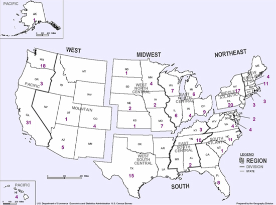
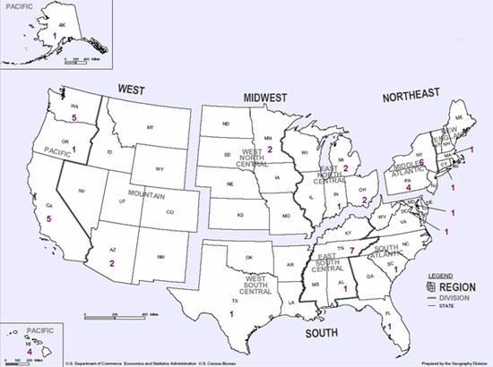
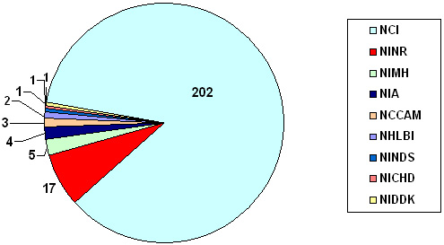

Cancer Control Research: OCS Analysis for FY 2005
Overview of the Fiscal Year (FY) 2005 National Institutes of Health (NIH)/Office of Cancer Survivorship (OCS) Research Grant Portfolio
- For this portfolio analysis, survivorship research was defined as that which focused on the health and life of a person with a history of cancer beyond the acute diagnosis and treatment phase encompassing both "prevention" and "control" aspects of chronic disease epidemiology.
- Studies that examined newly diagnosed survivors or those in active treatment were included in the portfolio analysis if follow-up extended at least two months post-treatment.
- Studies with a focus on pre-cancer screening and advanced cancer, and end-of-life research were not included in this portfolio.
Map 1 shows the distribution of the FY 2005 survivorship research grants by Principal Investigator's (PI) state. PIs were based in 37 states (74%), at 107 distinct academic or clinical intuitions, foundations, or small businesses across the country. The grants are well distributed among regions of the country with 62 in the West, 60 in the South, 58 in the Northeast, 49 in the Midwest, and 5 in the Pacific. California-based PIs hold the largest number of grants (N =31), followed by those in Pennsylvania (N = 20).It should be noted that this map does not reflect the fact that many PIs lead collaborative studies which may include co-investigators at additional performance sites within and outside of the PI's home state.
Map 2 shows the distribution of the FY 2005 pediatric survivorship research grants by Principal Investigator's (PI) state. Pediatric survivorship includes cancer survivors who were 21 years or younger at the time of diagnosis.
Chart 1 shows the distribution of the FY 2005 survivorship research grants by primary NIH funding institute. The National Cancer Institute holds 86% (N = 202) of these grants. OCS supports 53% of the entire research portfolio (N=124).
Chart 2 shows the distribution of the FY 2005 survivorship research grants by grant mechanism. R01 grants comprise nearly 50% of the portfolio (N=113).
Chart 3 shows the distribution of FY 2005 survivorship research grants by cancer site and study design. Female breast cancer is the most studied cancer site (N = 100) followed by hematologic cancer (N = 42) and colon cancer (N = 21).
Chart 4 shows the distribution of FY 2005 survivorship research grants by identified late/long-term effect and study design. The most prevalent late effect examined in the NIH Survivorship portfolio is psychological distress (N = 106), which includes affective distress/mood (N = 74), post-traumatic stress symptoms (N = 15), and anxiety (N =31). Fifty-five (52%) of the grants addressing psychological distress research are descriptive/prospective studies.
Chart 5 shows the distribution of FY 2005 survivorship research grants by primary study population (e.g. family caregivers, long-term survivors, pediatric survivors). The number of research projects among survivors 5 or more years post-diagnosis increased over the number of projects in FY2004. As reflected in the chart, studies among survivors of pediatric cancer continue to provide important data on the ongoing burden of cancer. In FY2005, 38 studies among ethnic/racial minority groups were funded compared to 35 studies in FY2004.
Chart 6 shows the distribution of FY 2005 survivorship PIs by type of advanced degree held. The research portfolio included 204 distinct PIs who demonstrate the diverse backgrounds and expertise needed to conduct the full range of research foci included in the survivorship research definition. Of the 138 PIs (N = 67%) who reported their expertise/specialization on their grant application, the majority of PIs reported having an expertise in Clinical Medical Sciences (N = 101) or Behavioral Science (N = 45). Other prevalent areas of expertise included Epidemiology (N = 29), Social Science (N = 17), Nursing (N = 15), and Statistics, Information & Computer Science (N = 15). It should be noted that 23 PIs have more than one survivorship research grant supported by NIH; PI degree and expertise were only counted once.
Map 1: NIH Cancer Survivorship Research Grants by State, FY2005

Map 2: NIH Pediatric Cancer Survivorship Research Grants by State, FY2005

Chart 1: Breakout of FY2005 NIH Survivorship Research Grants by Institute (N=236)

NCI: National Cancer Institute
NINR: National Institute of Nursing Research
NIMH: National Institute of Mental Health
NIA: National Institute on Aging
NCCAM: National Center for Complementary and Alternative Medicine
NHLBI: National Heart, Lung and Blood Institute
NINDS: National Institute of Neurological Disorders and Stroke
NICHD: National Institute of Child Health and Human Development
NIDDK: National Institute of Diabetes and Digestive and Kidney Diseases